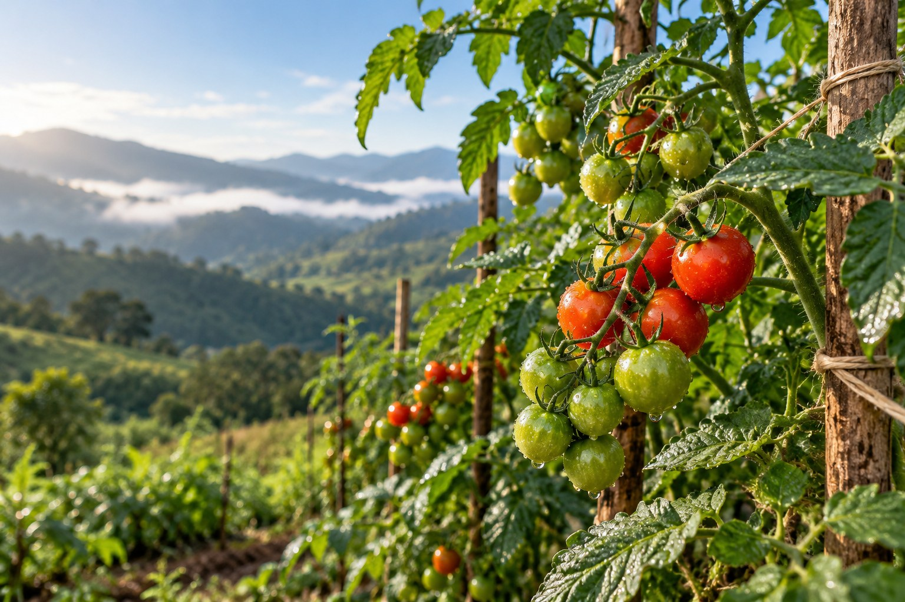

SiembraCo
Etapas del cultivo

Tomate cherry orgánico
Lote 14 · sembrado el 12 ago · día 42 de 65
-
Siembra
mié 12 ago
Semilla certificada y sustrato orgánico.
-
Germinación
mié 26 ago
Primeras hojas verdaderas.
-
Crecimiento
desde el 9 sep
Gana altura y forma racimos. La etapa más larga.
-
Floración y cuajado
est. 30 sep
Las flores se convierten en frutos verdes.
-
Cosecha programada
est. 14 – 18 oct
Se recoge en punto de color y se entrega.
Fecha de cosecha
14 – 18 octAjustada el dom 20 sep · antes 12 – 16 oct · motivo: lluvias sobre el promedio en la 2.ª semana de septiembre.
Información sanitaria validada por Legal SiembraCo · normativa INVIMA · rev. 15 sep 2026